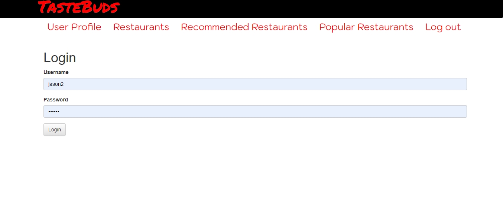

Food is essential to our survival and is one of the most popular aspects of Jamaican culture. Our country's restaurant industry has grown steadily over the past few years, and we believe that an application that gives consumers ideas on where to visit on their quest to have a spectacular dining experience would be beneficial to consumers and restauranteurs alike.
A group of qualified, highly-trained developers, devoted to ensuring that Jamaicans and visitors to the island never have a bad dining experience again, built a web application, the only one of its kind in Jamaica, to remove the hassle and uncertainty involved with discovering restaurants. So say goodbye to the days of relying on word of mouth recommendations, browsing multiple web pages, scanning social media feeds and flipping through the Yellow Pages to find the perfect restaurant, and say hello to Tastebuds.
The Tastebuds Restaurant Recommender is a simple and easy to use web application that you can use to discover restaurants that suit every need that you
could possibly have while eating out.
So whether you're searching for a quiet café to have a hot cup of coffee to start your day, or a take-out spot to get a quick, steaming hot plate of fried
chicken and rice for lunch, or a lively sports bar to end the day on a high note with some friends, the Tastebuds Restaurant Recommender has you covered.
Tastebuds, which is essentially a recommendation engine, takes the hassle out of finding the perfect place to eat, by utilizing the most advanced
filtering techniques to identify other users with a similar tastes, and suggests to you the restaurants that they've visited and had a wonderful experience at.
By reviewing and rating the restaurants you've visited, you not only improve recommendations that are more in line with your preferences, but you also ensure that
you'll never have a bad meal again.
Wherever in Jamaica you're located, from South Negril point to Morant point, trust Tastebuds for trustworthy reviews on the popular and not-so popular
restaurants across the country.
Visit our website today and sign up for a free account!
Tastebuds in Action
